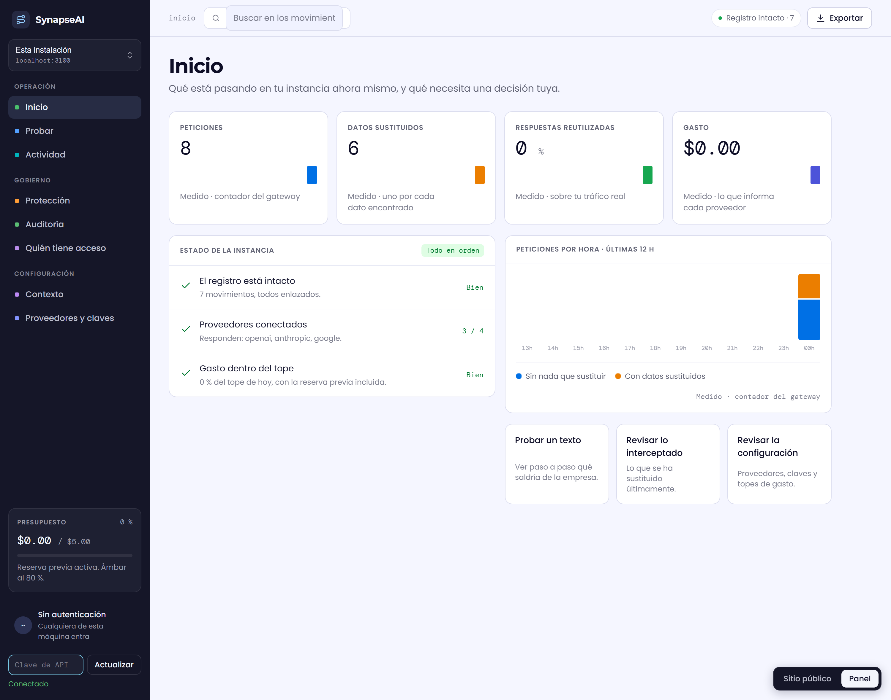
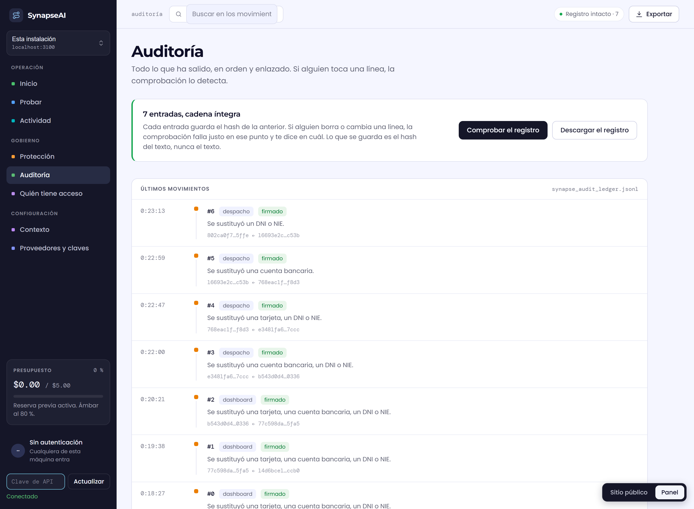

Lo que no pasa por aquí, no queda anotado. Ese es el trato.
Entre los que de verdad tengáis contratados.
Ida y vuelta. No solo lo que enviáis.


Reconoce documentos por su forma. Un secreto contado en un párrafo no lo detecta.
Frena los engaños conocidos. Uno nuevo y bien escrito puede pasar.
Solo ve lo que pasa por él. Quien lo esquive, lo esquiva.